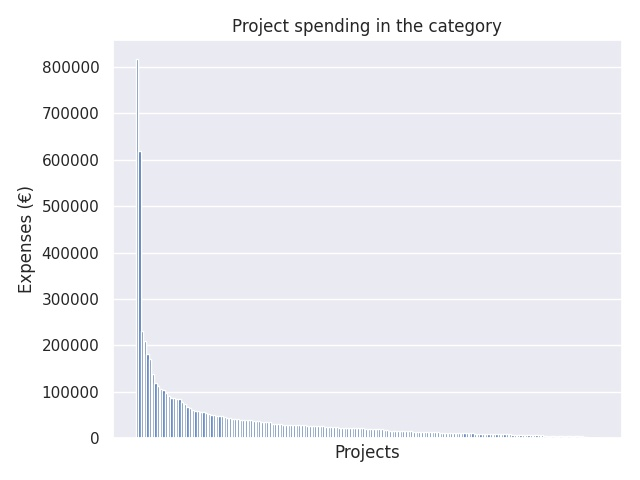

Kärkihanke 1 - hakuryhmä A: Tutoropettajien toiminta ja kouluttaminen 2017
Category summary
39.3K spent on average
816K highest spending

Reports in the category
Espoon kaupunki
Project name: Uusi espoolainen peruskoulu ja sen mahdollistajat 2
816K spent
Helsingin kaupunki/Kasvatuksen ja koulutuksen toimiala
Project name: Helsingin suomen- ja ruotsinkielinen tutoropettajaverkosto 2.0
618K spent
Hyvinkään kaupunki
Project name: Pedagogiset kouluttajat opettajan työn tukena
231K spent
Oulun kaupunki
Project name: Alakko nää opettajatutoria?
209K spent
Porin kaupunki
Project name: Tutoropettajat pedagogiikan edistäjinä
181K spent
Porvoon kaupunki
Project name: Porvoon Tutoropettajat - Tutorlärarna i Borgå
170K spent
Raahen kaupunki, opetustoimi
Project name: Tutor tueksi tunnille III -hanke
139K spent
Seinäjoen kaupunki
Project name: Tutor-opettajien toiminta ja kouluttaminen Seinäjoella
119K spent
Kangasalan kunta
Project name: Kangasalan tutorien toiminta ja koulutus, jatkohanke
112K spent
Lappeenrannan kaupunki
Project name: Innostuva, uudistuva Lappeenranta - Tutortoiminta 2018
107K spent
Joensuun kaupunki
Project name: Joensuun tutoropettajien toiminta ja kouluttaminen
103K spent
Hämeenlinnan kaupunki
Project name: Tutoropettajien toiminta ja kouluttaminen Hämeenlinnassa 2018-2019
98K spent
Nurmijärven kunta
Project name: Nurmijärven tutoropettajat – opetuksen ja oppimisen pedagogiset kehittäjät
91.6K spent
Laukaan kunta
Project name: Laukaan tutoropettajien toiminta ja osaamisen kehittäminen
88K spent
Raaseporin kaupunki
Project name: Raaseporin Into
86K spent
Mikkelin kaupunki
Project name: Mikkelin tutorit 2018-2019
84.9K spent
Salon kaupunki
Project name: Tutoropettaja opettajan osaamisen kehittämisen tukena
84K spent
Rauman kaupunki
Project name: Rauman OPS-koutsit - tutorkoulutusta ja -toimintaa opettajille
79.2K spent
Pirkkalan kunta
Project name: Tutor-toiminnan kehittäminen ja vakiinnuttaminen Pirkkalassa
74.4K spent
Lempäälän kunta
Project name: Lempäälän tutoropettajat
66.6K spent
Forssan kaupunki
Project name: Tutortoiminnan juurruttaminen osaksi perusopetusta
65.9K spent
Lohjan kaupunki
Project name: Digitutor 2.0
60.6K spent
Esbo stad
Project name: Lära tillsammans i vardagen – tutorlärarverksamhet i Esbo
59.6K spent
Nivalan kaupunki
Project name: Tutoropettajien toiminta ja kouluttautuminen, Nivala
59.3K spent
Iisalmen kaupunki
Project name: TOP-opet huipulle
56.5K spent
Korsholms kommun
Project name: DiGiTu - digikompetens för alla
55.8K spent
Nokian kaupunki
Project name: Tutoropettajat opetuksen uudistajina
54.3K spent
Pieksämäen kaupunki
Project name: Tutoropettaja toiminta ja kouluttaminen 2017
53.6K spent
Oulaisten kaupunki
Project name: Oulaisten koulujen digitutortoiminta 2018-2019
51.1K spent
Vörå kommun
Project name: Tutorlärare
49.8K spent
Imatran kaupunki
Project name: Askel Askeleelta Kohti Uutta Pedaa
49.2K spent
Raision kaupunki
Project name: Ota haltuun ja jaa!
47.9K spent
Mäntsälän kunta
Project name: Mäntsälän tutortoiminta
47.4K spent
Oulun yliopisto, Oulun normaalikoulu
Project name: KEHYS Kehittyvä yhteistyö
46.4K spent
Haminan kaupunki
Project name: Tutoropettajien toiminta ja edelleen kouluttaminen Haminassa
43.5K spent
Riihimäen kaupunki
Project name: Tutorope Riihimäellä
42.9K spent
Sastamalan kaupunki
Project name: Sastamalan tutoropettajat
41.5K spent
Liedon kunta
Project name: Liiketuudor 2
41.2K spent
Pedersöre kommun
Project name: Tutorverk 2.0 Pedersöre
40.8K spent
Hollolan kunta
Project name: Kärkihanke 1 Tutorpettajan toiminta ja kouluttaminen 2017
40.5K spent
Sallan kunta
Project name: Hyvää digiarkea etsimään kodin ja koulun yhteistyönä
39.9K spent
Ilmajoen kunta
Project name: Tutoreille oppia ja hommia II
39.8K spent
Alajärven kaupunki
Project name: Yhdessä hyvä tulee 2
38.9K spent
Pargas stad
Project name: Skärgårdens nya grundskola
38.6K spent
Huittisten kaupunki
Project name: Tutoropettajat muutosagentteina
37.9K spent
Alavuden kaupunki
Project name: Tutoropettajien Toiminta 2
36.5K spent
Hangö stad
Project name: Gemensam tutorlärarverksamhet för Hangö stads grundskolor enligt den nya lokala läroplanen 2.0
36.5K spent
Janakkalan kunta
Project name: Tutoropettajat pedagogisina toimijoina ja tiedon jakajina
35.9K spent
Akaan kaupunki
Project name: Akaan kaupungin tutortoiminnan kehittäminen ja vakiinnuttaminen
35.6K spent
Pietarsaari
Project name: Pietarsaaren koulujen digitutortoiminnan kehittäminen
34.7K spent
Laitilan kaupunki
Project name: Vakka-Suomen OPS-luotsit
34.7K spent
Siilinjärven kunta
Project name: Siilinjärven tutoropettajien toiminta ja kouluttaminen
31.8K spent
Limingan kunta
Project name: Toimintaspurtista toimintakulttuurin muutokseen
31.7K spent
Iin kunta
Project name: Iin tutoropettajat digitaalisen ja pedagogisen kehittämisen tukena
31.1K spent
Euran kunta
Project name: Uuden opetussuunnitelman jalkauttaminen Eurassa
30.4K spent
Kauniaisten kaupunki
Project name: Grani Digitutors
29.6K spent
Larsmo kommun
Project name: Tutor 2.0
29.5K spent
Loimaan kaupunki
Project name: Tutoropettajien toiminta ja kouluttaminen
29.4K spent
Savonlinnan kaupunki
Project name: Peruskoulun Tutorit kentällä 2018-2019 Savonlinna
29.1K spent
Malax kommun
Project name: Tutorlärarteam i Malax och Korsnäs kommuner
29.1K spent
Lapuan kaupunki
Project name: Iso ilmiö II -kaikki yhdessä
28.9K spent
Nykarleby stad
Project name: NET 2.0
28.5K spent
Säkylän kunta
Project name: Tutoropettajien toiminnan jatkaminen Säkylässä
28K spent
Ikaalisten kaupunki
Project name: Tutoropettaja osaamisen ja toimintakulttuurin kehittäjänä
27.9K spent
Hattulan kunta
Project name: Tutoropettajien toimintaan ja kouluttamiseen
27.6K spent
Haapaveden kaupunki
Project name: Tutorit vauhdittamaan OPS-uudistusta 2
27.5K spent
Tyrnävän kunta
Project name: Oivaltavaa oppimista 2
27K spent
Leppävirran kunta
Project name: Tutoropettajien toiminta ja kouluttaminen 2017
26.9K spent
Heinolan kaupunki
Project name: Tutoropettajien toiminta Heinolassa
26.5K spent
Oriveden kaupunki
Project name: Oriveden tutoropettajien toiminta
26.3K spent
Pälkäneen kunta
Project name: Tutorina koulun arjessa ja kehittämistyössä
26.1K spent
Siikajoen kunta
Project name: Tutoroinnilla tuloksiin
25.6K spent
Haapajärven kaupunki
Project name: Tutorin tuella
25.4K spent
Paimion kaupunki
Project name: Tutoropettajien toiminta ja kouluttaminen
25.1K spent
Mänttä-Vilppulan kaupunki
Project name: Taidekaupungin digitutorit
24.4K spent
Eurajoen kunta
Project name: Tutoropettajien toiminta ja kouluttaminen Eurajoki
24.3K spent
Loviisan kaupunki
Project name: Tutorit apuun - kahdella kielellä 2
23.3K spent
Nakkilan kunta
Project name: Nakkilan digikeikka
23.1K spent
Pielaveden kunta
Project name: Tutoropettajatoiminnan jatkaminen
23K spent
Pyhärannan kunta
Project name: Vakka-Suomen OPS -luotsit
23K spent
Närpes stad
Project name: Tutorlärarnas verksamhet och utbildning
22.9K spent
Pornaisten kunta
Project name: Pornaisten tutoropettajat
22.8K spent
Jokioisten kunta
Project name: Uutta pedagogiikkaa jokaiseen koulupäivään
22.7K spent
Askolan kunta
Project name: Askolan kehittyvät tuutorit
22.3K spent
Muuramen kunta
Project name: Muuramen tutoropettajien toiminta ja kouluttaminen
22.2K spent
Hämeenkyrön kunta
Project name: Virtaa digiloikasta
22.2K spent
Helsingin yliopiston Viikin normaalikoulu
Project name: Digitutortoiminta II - Hgin yliopiston harjoittelukoulut
21.1K spent
Joroisten kunta
Project name: Digiloikasta digiarkeen
20.8K spent
Isonkyrön kunta
Project name: Tutoropettajien toiminta ja kouluttaminen
20.5K spent
Savitaipaleen kunta
Project name: Tutoropettajien toiminta ja kouluttaminen
20.4K spent
Kristiinankaupunki
Project name: A) tutoropettajien toiminta ja kouluttaminen (yhteisesti ruotsinkielisille ja suomenkielisille kouluille kunnassamme
20.2K spent
Orimattilan kaupunki
Project name: Tutoropettajien toiminta ja kouluttaminen
20.2K spent
Itä-Suomen suomalais-venäläisen koulun säätiö sr
Project name: Tutoropettajat opetuksen kehittäjinä
19.3K spent
Sievin kunta
Project name: Tutorien toiminta vertaiskouluttajina
18.7K spent
Elias-Koulun Kouluyhdistys ry
Project name: Tutoropettajien toiminta ja kouluttaminen
17.4K spent
Kimitoöns kommun
Project name: Kimitoöns digitutorer 2 - KidIT 2
17.1K spent
Itä-Suomen yliopisto
Project name: Tutoropettajien toiminta ja kouluttaminen 2017
17K spent
Paraisten kaupunki
Project name: Tutorointi vakiintuu koulujen yhteistyössä
17K spent
Oulunkylän Yhteiskoulun kannatusyhdistys r.y.
Project name: Tutoropettajien toiminta
17K spent
Ruskon kunta
Project name: ME - yhteistyöstä yhdessä tekemiseen
16.5K spent
Inarin kunta
Project name: Inarilainen tutorope
16.3K spent
Mäntyharjun kunta
Project name: Tutoropettajat toimimaan
16.2K spent
Muhoksen kunta
Project name: Kärkihanke 1 - hakuryhmä A: tutoropettajien toiminta ja kouluttaminen
16.1K spent
Reisjärven kunta/koulutoimi
Project name: Tutoropettajien toiminnan käynnistäminen ja kouluttaminen sekä digitalisaation syventäminen
15.8K spent
Lapinlahden kunta
Project name: Tutor-opettajien toiminta ja kouluttaminen Lapinlahdella
14.8K spent
Helsingin Rudolf Steiner -koulun kannatusyhdistys ry
Project name: Digiloikka Helsingin Rudolf Steiner -koulussa
14.7K spent
Parkanon kaupunki
Project name: Bittejä ja pedagogiikkaa
14.7K spent
Outokummun kaupunki
Project name: Tutoreiden tuella tulevaa rakentaen
14.3K spent
Ruokolahden kunta
Project name: Kohti uutta koulua - tutorit toimii Ruokolahdella
14.2K spent
Evijärven kunta
Project name: Digiloikan askeleet
14.1K spent
Naantalin kaupunki
Project name: Tutoropettajien toiminta ja kouluttaminen
14K spent
Steinerpedagogikens Vänner i Västnyland rf.
Project name: Digitalisering av kreativa processer vid Mikaelskolan
13.9K spent
Liperin kunta
Project name: Tutortoiminnan jatko
13.3K spent
Sauvon kunta
Project name: Tutoropettajien toiminta ja kouluttaminen
13K spent
Lieksan kaupunki
Project name: TUTOROPETTAJIEN TOIMINTA JA KOULUTTAMINEN
12.6K spent
Polvijärven kunta
Project name: Polvijärven tutoropettajien toiminta ja kouluttaminen
12.5K spent
Åbo Akademi
Project name: Tutorläraren på skolans utkikspost
12K spent
Mynämäen kunta
Project name: Tutoropettajat Mynämäessä II
11.7K spent
Lumijoen kunta
Project name: Tutoropettajien toiminta ja kouluttaminen
11.5K spent
Inkoon kunta
Project name: Tutoropettajatoiminta
11.4K spent
Nousiaisten kunta
Project name: Nousiaisten tutoropettajien toiminta ja kouluttaminen
11.3K spent
Kronoby kommun
Project name: Tutorlärande i Kronoby kommun 2
11.3K spent
Posion kunta
Project name: Tutoropettajan toiminta ja kouluttaminen Posion peruskoululla
11.3K spent
Pyhännän kunta
Project name: Tutortoimintaa Pyhännälle 2
11.1K spent
Lappajärven kunta
Project name: Tutorointia järven ympäri
11.1K spent
Lopen kunta
Project name: Tutoropettajien toiminta ja kouluttaminen
11K spent
Heinäveden kunta
Project name: Tutorhanke
10.8K spent
Humppilan kunta
Project name: yhdessä eteenpäin
10.6K spent
Espoon kristillisen koulun kannatusyhdistys ry
Project name: TUTOR
10.6K spent
Pellon kunta
Project name: Digitutoropettajatoiminnan vakiinnuttaminen Pellon peruskoulussa
10.4K spent
Perhon kunta
Project name: Perhon tutoropettajien koulutus ja toiminta
10.2K spent
Merikarvian kunta
Project name: Merikarvian peruskoulujen Tutoropettajien toiminta ja kouluttaminen
10K spent
Hartolan kunta
Project name: Tutoropettajan toiminta ja kouluttaminen
9.86K spent
CONFIDO Pohjanmaan Kristillinen Kasvatus - Österbottens Kristliga Uppfostran ry
Project name: Superope - TVT-osaamisen kartuttaminen ja osaamisen jakaminen.
9.83K spent
Luumäen kunta
Project name: Luumäen kunnan tutor-opettajatoiminta
9.42K spent
Lestijärven kunta
Project name: Lestin tutorit
9.02K spent
Maskun kunta
Project name: OSAAMO
8.93K spent
Helsingin Uusi yhteiskoulu Osakeyhtiö
Project name: Digitutorit vertaistukena
8.92K spent
Ristijärven kunta
Project name: Tutorointia digi-arkeen
8.88K spent
Alavieskan kunta
Project name: Taitavana Tutorina Alavieskan yhtenäiskoulussa II
8.86K spent
Iitin kunta
Project name: Digitaidot käyttöön alakouluissa - kisälleistä mestareiksi
8.86K spent
Rantasalmen kunta
Project name: Rantasalmen tutorit
8.32K spent
Understödsföreningen för Rudolf Steiner skolan i Helsingfors ry.
Project name: Tutorlärarnas verksamhet och utbildning
8.2K spent
Rautavaaran kunta
Project name: Tutoropettajatoiminnan kehittäminen
8.16K spent
Hyrynsalmen kunta
Project name: Tutorapua digioppimiseen
7.87K spent
Rääkkylän kunta
Project name: Tutorit
7.85K spent
Puumalan kunta
Project name: Osaava ja toimiva tutor
7.61K spent
Lemin kunta
Project name: Tutoropettajat Lemillä
7.53K spent
Merijärven kunta
Project name: Uusi pk- ohjelma, tutor-toiminta 2
7.53K spent
Padasjoen kunta
Project name: Padasjoki Tutoropettajien koulutus ja toiminta 2
7.41K spent
Björneborgs svenska samskolas aktiebolag
Project name: Tutorlärarnas verksamhet och utbildning
7.17K spent
Kotka Svenska Samskolas garantiförening r.f.
Project name: Tutorlärare i KSS
7.11K spent
Porin Kristillisen koulun kannatusyhdistys ry
Project name: Tutoropettaja verkostoituu ja valmentaa
6.54K spent
Oulun Steinerkoulun kannatusyhdistys ry
Project name: Oulun steinerkoulun TVT-tutortoiminnan ja -strategian kehittäminen sekä tutortoiminnan vakiinnuttaminen
6.23K spent
Harjavallan kaupunki
Project name: Harjavalta - kohti uutta pedagogiikkaa
6.13K spent
Savukosken kunnanhallitus
Project name: Tutoropettajien toiminta ja kouluttaminen
6.06K spent
Pertunmaan kunta
Project name: Tutoropettaja - pienen kunnan koulujen kehittäjä
5.97K spent
Nurmeksen kaupunki
Project name: Ope-Tutorit
5.93K spent
Lappeenrannan seudun steinerkoulun kannatusyhdistys r.y.
Project name: Lappeenrannan steinerkoulun digitutor
5.68K spent
Halsuan kunta
Project name: Tutor tueksi
5.66K spent
Punkalaitumen kunta
Project name: Tutoropettajien toiminta ja kouluttaminen
5.57K spent
Mustasaaren kunta
Project name: Tutoropettajien toiminta ja kouluttaminen
5.23K spent
Apollon Yhteiskoulun kannatusyhdistys ry
Project name: Tutoropettajien toiminta ja kouluttaminen Apollossa
5.18K spent
Oulun kristillinen kasvatus ry
Project name: tutordigiloikka@oukris_2
5.02K spent
Anna Tapion säätiö sr
Project name: Tutor-opettaja
4.88K spent
Etelä-Pohjanmaan Steinerkouluyhdistys r.y.
Project name: Suomen steinerkoulujen TVT -tutortoiminnan ja -strategian kehittäminen
4.78K spent
Enonkosken kunta
Project name: Pedagogiikan uudistamista Enonkoskella
4.55K spent
Lauttasaaren yhteiskoulun kannatusyhdistys ry
Project name: Lauttasaaren yhteiskoulun tutoropettajatoiminta
4.21K spent
Svenska Privatskolan i Uleåborg
Project name: Tutorlärarverksamheten
3.3K spent
Lapinjärven kunta
Project name: Koko kylän koulu
2.48K spent
Oripään kunta
Project name: Oripään kunnan tutoropettajien toiminta ja kouluttaminen 2018
1.33K spent
Rautalammin kunta
Project name: Rautalammin opettajat digiaikaan
586 spent
Muonion yhtenäiskoulu
Project name: Tunturitutorit
0 spent
Pohjois-Haagan yhteiskoulu oy
Project name: Tutoropettajien toiminta ja kouluttaminen
0 spent